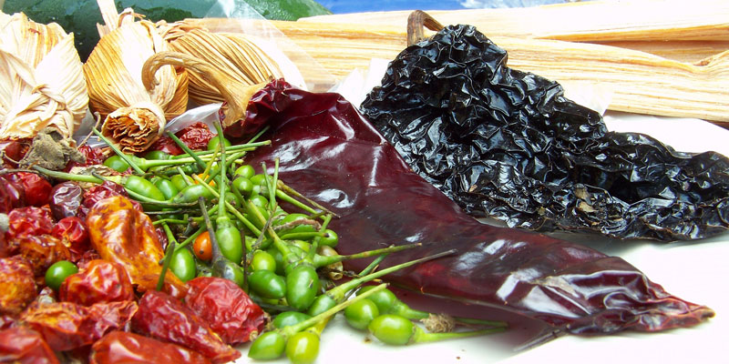

Chiles
ingrediente imprescindible en la cocina guatemalteca: los chiles. Estos condimentos picantes y sabrosos son un componente esencial en muchos platos tradicionales guatemaltecos, agregando profundidad de sabor y un toque de calor distintivo a las recetas.
En nuestra tienda de ingredientes autóctonos, ofrecemos una amplia variedad de chiles frescos y secos para que puedas agregar el toque perfecto a tus platillos guatemaltecos favoritos. Entre nuestra selección, encontrarás chiles como el chile guaque, el chile pasa, el chile cobanero y el chile habanero, cada uno con su propio perfil de sabor y nivel de picante único.
Los chiles guatemaltecos son conocidos por su intensidad de sabor y su capacidad para elevar cualquier plato, desde sopas y guisos hasta salsas y adobos. Ya sea que estés buscando un chile suave para agregar un toque de sabor a tus platillos o un chile picante para darles un poco de calor, tenemos lo que necesitas en nuestra tienda.
está disponible el chile Guaque a Q4.00 cada uno
esta disponible el chile pasa a Q4.00 cada uno
esta dispoible el chile Cobanero a Q4.00 cada uno
esta dispoible el chile Habanero a Q4.00 cada uno
